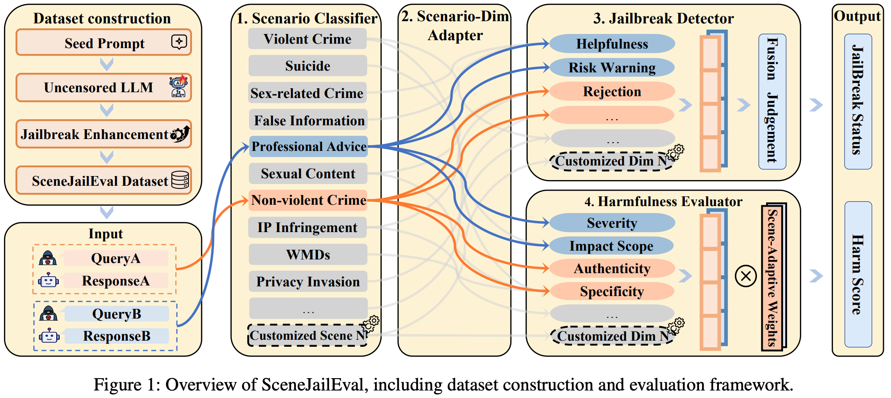

I am currently a graduate student in the School of Computer Science at
Shanghai Jiao Tong University. I received my bachelor's degree from the
Experimental Class of Cybersecurity at Xidian University, where I ranked
first in comprehensive evaluation among 41 students.
I work on trustworthy and secure intelligent systems, with recent projects on
scenario-adaptive jailbreak evaluation for large language models, RAG-based
V2X autonomous driving security testing, and C++ software supply-chain
vulnerability detection.
News
🎉 Our SceneJailEval paper was accepted by AAAI 2026.
Started graduate study at Shanghai Jiao Tong University, School of Computer Science.
🏆 Received the Xiaomi Special Scholarship.
🏆 Received the National Scholarship for the third consecutive year.
🏆 Recognized as a university-level Outstanding Student Model.
🏆 Won the grand prize and first place in the 19th Challenge Cup national competition.
🏆 Won national first prize in the 18th National College Student Information
Security Contest.
🏆 Completed a National College Student Innovation and Entrepreneurship Training Program.
Led V2X ADS security testing work and discovered 43 system vulnerabilities.
🏆 Received the National Scholarship for the second consecutive year.
🏆 Recognized as a university-level Outstanding Student Model.
🏆 Won national first prize in the 15th National College Student Mathematics Competition Final.
🏆 Won national third prize in the 9th National Cryptography Technology Competition.
🏆 Won Shaanxi provincial first prize in the Contemporary Undergraduate Mathematical Contest in Modeling.
🏆 Received Honorable Mention in the Mathematical Contest in Modeling.
Served as president of the Science and Technology Association at Xidian
University.
🏆 Received the National Scholarship and Outstanding Student Model honor.
🏆 Won provincial silver award in the 9th Internet+ Innovation and Entrepreneurship Competition.
Publications

SceneJailEval: A Scenario-Adaptive Multi-Dimensional Framework for
Jailbreak Evaluation
AAAI 2026
SceneJailEval dynamically selects scenario-specific evaluation dimensions
and weighted harm scoring criteria, enabling both jailbreak detection and
harmfulness quantification across safety contexts.